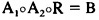
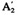
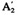

by Abraham Kandel
CRC Press, CRC Press LLC
ISBN: 084934297x Pub Date: 11/01/91
|
|
Fuzzy Expert Systems
by Abraham Kandel CRC Press, CRC Press LLC ISBN: 084934297x Pub Date: 11/01/91 |
| Previous | Table of Contents | Next |
Having at our disposal a collection of reduced models determined, with the aid of Propositions 1 and 2, we may formulate the following problem. Assume that a subset K of indices of the set {1,2,…,N} and related inputs are given. Therefore, the following system is known:
where j ∈ K. Note that for any j ∈ K and we deal, not with single membership function Bj, but with an interval-valued fuzzy set, the so-called Φ fuzzy set.9 Instead of the two preceding equations, we can introduce a shorthand notation:
It is clear that the reduced fuzzy model generates the interval-valued fuzzy set of output. Then, if several input fuzzy sets are available, the relevant outputs forming Φ fuzzy sets should be combined to get an overall result.
A reasonable concept to aggregate the results of the reduced models from the subset K would work as follows. For any bk ∈ B, calculate the number of Φ fuzzy sets contributing to the previously fixed values ranging between zero and card K.
By a simple normalization, we reach a fuzzy set of the second order B; this means that to every bk ∈ B, a fuzzy set defined in [0,1] has been established. More precisely, the value of the membership function B (before normalization) is equal to:
for any w ∈ [0,1], bk ∈ B.
Remembering the main idea behind the concept of model reduction that relies on diverse grades of difficulty and precision while the fuzzy sets of inputs are determined, the fuzzy set B may be modified to take it into account. A level of difficulty to get reliable data of the corresponding input in Aj is expressed by uj, j ∈ K; uj is in [0,1]. The higher the value of uj, the more severe difficulties are manifested which deal with input determination. The results obtained are less reliable and, in consequence, should not significantly contribute to the final result. The weights uj, j∈ K, can be easily obtained, e.g., by the well-known Saaty’s priority method.
This weight factor is useful to control a width of the interval-valued fuzzy set . Now, instead of the original one, namely, one has:
where bk ∈ B. We illustrate these stated considerations with the help of a numerical example.
We consider a two-input, single-output fuzzy model , where n1 = n2 = m = 3 is described by the following fuzzy relation:
Construct two reduced fuzzy models making use of the families of the fuzzy sets introduced earlier. Let A1 be singleton and A2 be “unknown”.
Then we have for the first and second model, respectively:
To visualize how the reduced model works, we consider two input data  and  so that:
and  so that:
The first reduced model gives an interval fuzzy set:
{[0.3 0.5 0.3], [0.7 0.7 0.7]}
while the second yields:
{[0.3 0.6 0.4], [0.7 1.0 1.0]}
Their combination, applying the results of Section IV. for μj = 1, j = 1,2, lead to the fuzzy set of the second order , with membership function given by:
For comparison, the fuzzy set resulting from the complete model equation is equal to [0.7, 0.5, 0.5] and is covered by the fuzzy set B.
The problem discussed, at length, in this chapter has been addressed to a class of those tasks of verification and improvement properties of the knowledge bases for rule-based expert systems. It has been indicated how the fuzzy relation of the knowledge base can be modified to reach a state of more compact shape yet producing acceptable changes in the control part of the rules. Two general lines of this construction have been underlined, namely, saving reasoning time and preserving the user-friendly property of the expert systems.
It is also of interest that the algorithms provided here can be applied to pattern recognition schemes, e.g., References 10—12. In this second case the reduction already performed corresponds to a feature selection problem: the changes of control actions find their analogies in an increment of the classification error.
Further studies in this direction can be concentrated for the solution of the reduction problem in the case that the fuzzy relation of the knowledge base is given at a certain precision (i.e., the set of the corresponding fuzzy relation equations has only an approximate solution). In such a situation it would be interesting to discover a set of subcondition candidates that might be eliminated.
| Previous | Table of Contents | Next |